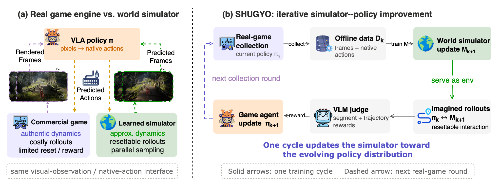
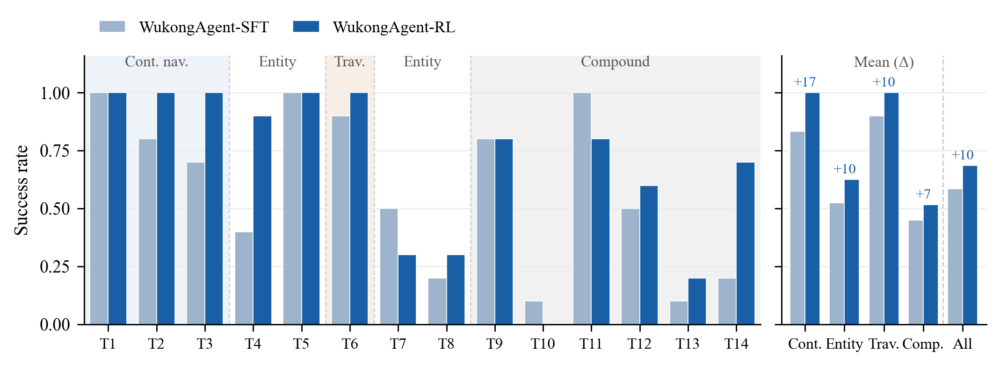

Task 8
“Pass through the stone gate ahead on the right.”
On-Policy Reinforcement Learning of Game Agents in a Generative World Model
1Tencent Turing Lab
Game agents trained by supervised imitation on video–action data drift into states that demonstrations rarely cover, where small errors compound into task failure. Reinforcement learning (RL) can provide the missing experience of acting, failing, and recovering, but closed-source commercial games lack the fast dynamics, programmatic resets, and reward signals that RL requires. We present SHUGYO, a framework that adapts a pretrained video diffusion model into a learned environment for on-policy RL in the AAA action game Black Myth: Wukong. The simulator predicts future frames from rendered observations and native keyboard-and-mouse controls, resets rollouts from specified starting frames, and generates each chunk in 4 denoising steps. A rubric-guided vision–language judge scores the resulting rollouts, providing rewards without access to internal game state. Starting from a supervised vision–language agent, we perform RL post-training with GRPO and a two-stage curriculum entirely within the simulator. Per-task success rates in the simulator correlate with those in the real game (Pearson r = 0.88), and RL post-training in the simulator raises real-game success from 58.6% to 68.6%.

(a) The commercial game offers authentic dynamics but costly rollouts and limited reset and reward access. SHUGYO replaces it with a learned world simulator that exposes the same visual-observation and native-action interface, so a policy mapping pixels to keyboard-and-mouse actions can interact with either environment unchanged, while the simulator additionally supports resettable rollouts and parallel sampling. (b) Offline gameplay collected in the real game trains the world simulator, which then serves as the RL environment. The policy interacts with the simulator through imagined rollouts, a rubric-guided VLM judge scores these rollouts, and the resulting rewards drive the policy update.
We evaluate three questions in order: whether RL inside the simulator improves the agent in the real game, whether success in the simulator tracks success in the real game, and whether the simulator follows native controls. The world simulator is trained on about 190 hours of Black Myth: Wukong gameplay with synchronized keyboard and mouse actions.
WukongAgent-SFT is post-trained with GRPO entirely inside the simulator, then deployed in the real game without modification. Both policies are evaluated on 14 held-out instruction-following tasks, 10 trials each.
The number of tasks per category is given in parentheses. Higher is better for every column.
| Policy | Cont. nav. (3) | Entity nav. (4) | Traversal (1) | Compound (6) | Overall (14) |
|---|---|---|---|---|---|
| WukongAgent-SFT | 83.3 | 52.5 | 90.0 | 45.0 | 58.6 |
| WukongAgent-RL | 100.0 | 62.5 | 100.0 | 51.7 | 68.6 |
| Δ (pp) | +16.7 | +10.0 | +10.0 | +6.7 | +10.0 |
Bold = best

The same pipeline applied to Honor of Kings: World raises real-game success from 52% to 74% on 10 entity-directed tasks.
The same WukongAgent-SFT policy is run in the real game and in the simulator from identical initial observations. In both environments, the same rubric-guided judge scores each rollout video.
Correlations are computed over per-task success rates. Deviation is the mean absolute difference between the two environments.
| Task subset | Pearson r ↑ | Deviation ↓ |
|---|---|---|
| Non-compound (i–iii) | 0.92 | 20.0% |
| Compound (iv) | 0.82 | 25.0% |
| All 14 tasks | 0.88 | 22% |
All tasks: Spearman ρ = 0.90
The simulator preserves the relative difficulty of tasks. It is, however, systematically more pessimistic: it yields a lower success rate on 12 of the 14 tasks.
Agreement is tighter on atomic skills than on compound tasks, likely because errors accumulate over longer, multi-stage rollouts. This motivates a curriculum that consolidates atomic skills first.
A held-out benchmark of 50 initial-frame / action-trajectory pairs. Each example gives one initial frame and a 48-step native action trajectory; ground-truth future frames are used only for evaluation.
FDS: cosine similarity between predicted and ground-truth optical flow. EPE: flow end-point error. CFD: counterfactual distance between predictions from the same frame under different actions (action sensitivity). Dyn_Deg: spatial extent of motion. Mot_Smooth: temporal regularity of flow.
| Model | FDS ↑ | EPE ↓ | CFD ↑ | Dyn_Deg ↑ | Mot_Smooth ↑ |
|---|---|---|---|---|---|
| SolarWM (Wan2.2-5B) | 0.588 | 10.44 | 0.12 | 0.88 | 0.15 |
| Matrix-Game 3.0 | 0.638 | 8.42 | 0.18 | 0.70 | 0.16 |
| SHUGYO | 0.660 | 9.52 | 0.20 | 0.79 | 0.16 |
| Ablations | |||||
| w/o sink latent | 0.638 | 9.90 | 0.20 | 0.78 | 0.13 |
| w/o decoupled fusion | 0.629 | 10.06 | 0.13 | 0.72 | 0.12 |
Bold = best | Underline = second best | ranked among the three compared models
SHUGYO is best on FDS and CFD: its motion direction agrees best with the ground truth, and it responds most to changes in the action trajectory. Its EPE is lower than SolarWM but higher than Matrix-Game 3.0, so motion magnitude is predicted less accurately than direction. Removing the decoupled key/mouse fusion causes the largest drop in CFD (0.20 → 0.13).
The simulator is adapted to Honor of Kings: World (NGR) with 3 hours of video–action data, about 1/60 of the Black Myth: Wukong training budget, and evaluated on 40 examples under the same protocol.
Top: zero-shot inference without NGR data. Bottom: training on the 3-hour NGR data. † Reported in clips, as the total duration is not disclosed.
| Model | Pre-training | NGR data | FDS ↑ | EPE ↓ | CFD ↑ | Dyn_Deg ↑ | Mot_Smooth ↑ |
|---|---|---|---|---|---|---|---|
| Zero-shot | |||||||
| Matrix-Game 3.0 | 4.8M clips† | — | 0.532 | 11.34 | 0.12 | 0.75 | 0.19 |
| SHUGYO | 190 h (Wukong) | — | 0.497 | 10.21 | 0.13 | 0.74 | 0.19 |
| Trained on NGR | |||||||
| SHUGYO | — | 3 h | 0.439 | 10.50 | 0.03 | 0.72 | 0.22 |
| SHUGYO | 190 h (Wukong) | 3 h | 0.659 | 7.50 | 0.16 | 0.77 | 0.20 |
Bold = best | Underline = second best
Training on the 3-hour NGR data alone gives a near-zero CFD (0.03), so its higher Mot_Smooth does not reflect better dynamics. Starting from the Wukong checkpoint raises FDS from 0.439 to 0.659 and CFD from 0.03 to 0.16, which suggests that much of the native-control grounding transfers across titles.
All videos below are generated by the SHUGYO world simulator in closed loop with the agent, without querying the real game. For each task, the two rollouts start from the same initial observation, and different sampled control chunks lead to a successful and a failed trajectory. Such within-group outcome differences provide the learning signal for group-relative policy optimization.
“Pass through the stone gate ahead on the right.”
“Pass through the pavilion ahead.”
@misc{han2026shugyo,
title = {{SHUGYO}: On-Policy Reinforcement Learning of Game Agents in a Generative World Model},
author = {WenKang Han and Hongqiao Lian and Zipeng Yang and Danyang Chen and Zixing Guo and Shaoguo Wen and Wen Gao and Junle Wang},
year = {2026},
note = {Manuscript}
}